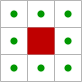
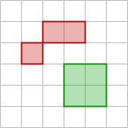
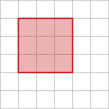
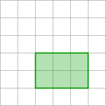
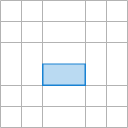
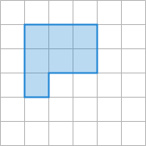
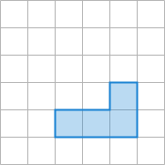
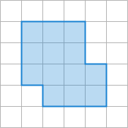

|
IDS peak ICV v1.5.0
|
|
IDS peak ICV v1.5.0
|
In many image processing tasks, it's essential to identify and analyze specific areas within an image. Such an area is called a region. A region typically consists of connected pixels that share certain properties or spatial relationships.
This guide covers the core operations for extracting, modifying, and analyzing regions.
If you want to identify connected components of a region you determine which pixels are connected to each other. Two pixels are considered connected if they have an edge or a corner in common. This connectivity is called 8-neighborhood.
| 8-neighborhood |
|---|
 |
To obtain the individual components of a region, use the following function:
After determining the connected components, the individual components are stored as an array of regions.
| Two Regions |
|---|
 |
Regions can be changed using various mathematical set operations. You can use these set operations to perform changes and analyses on regions, which is useful for various image processing and computer vision tasks.
These operations include intersection, difference and union.
The intersection of two regions, A and B, consists of all points that are common to both regions. A ⋂ B represents the overlapping area where the red square and the green rectangle intersect.
| A | B | A ⋂ B |
|---|---|---|
 |  |  |
Use the following function:
The difference between two regions, A and B, consists of all points that belong to region A but not to region B. As shown below, A \ B represents the area of the red square excluding the part that overlaps with the green rectangle.
| A | B | A \ B |
|---|---|---|
 |
Conversely, B \ A represents the area of the green rectangle excluding the part that overlaps with the red square.
| B | A | B \ A |
|---|---|---|
 |
Use the following function:
The union of two regions, A and B, consists of all points that belong to region A and region B.
| B | A | B ⋃ A |
|---|---|---|
 |
Use the following function:
You can determine the following properties of a region, which we call features:
One basic feature is the area, which corresponds to the number of points in the region.
The center of gravity of a region is calculated as the average of the coordinates of all its points, indicating the region’s central position. The result is subpixel precise, meaning it is not limited to integer coordinates.